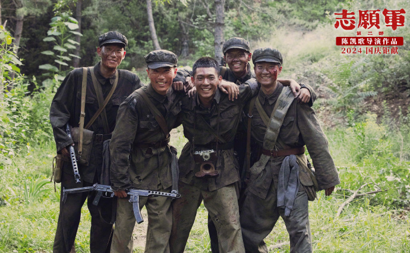
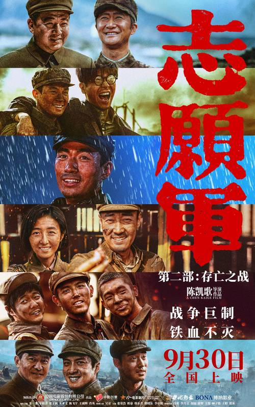
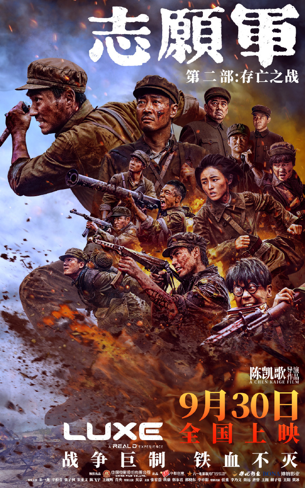

基本信息
《志愿军：存亡之战》是由陈凯歌执导，陈凯歌、张珂编剧，朱一龙、辛柏青、张子枫、朱亚文、陈飞宇、王砚辉、肖央领衔主演，吴京特别主演，张宥浩、欧豪、韩东君、郭晓东、李卓阳主演，任重、李乃文、聂远、唐曾、王挺、赫子铭、王阳、贾冰特别出演的战争电影，于2024年9月30日在中国大陆上映。
该片是《志愿军》三部曲第二部，聚焦铁原阻击战，讲述了抗美援朝战争中第三次战役到第五次战役中的故事

剧情简介
影片聚焦铁原阻击战。1951年5月，中国人民志愿军第63军刚刚结束了持续一个月的作战，就受命进驻铁原战场，正面对抗“联合国军”4个师。志愿军将士们浴血奋战，终于把敌军打上了谈判桌。 为了完成任务，63军189师的战士化整为零，把自己变成一根钉子，牢牢钉在阵地上。 1营阵地上，身为营教导员的李想（朱一龙 饰）立下“一步也不会再退”的誓言，死守阵地。 炮火连天中，李默尹（辛柏青 饰）一家三口在战场上团聚，一把钥匙，一顿战壕中的团圆饭，让这个因战争分离的小家更为亲密。 为了给新中国造出更好的武器，归国军工专家吴本正（朱亚文 饰）在张孝恒（欧豪 饰）的保护下进入战场。身为警卫员的张孝恒坚信，守住了吴本正，就是守住了祖国的未来。 孙醒（陈飞宇 饰）、杨三弟（张宥浩 饰）也纷纷来到铁原。63军全体将士一起，在铁原战场上筑成了一道冲不破的“铁长城”！
电影《志愿军：存亡之战》作为《志愿军：雄兵出击》的续作，一改前作全景式的宏大创作方式，将视线聚焦于李默尹、李想、李晓一家人的经历，从“大家”到“小家”，又以“小家”映“大家”。作为《志愿军》三部曲中的第二部，《志愿军：存亡之战》不仅再现了抗美援朝战争期间中国人民志愿军的英勇事迹，更通过生动的画面、情感丰富的人物形象聚焦抗美援朝战争中的第五次战役，以真实的历史细节将观众带回那段波澜壮阔的历史时刻。该影片上映后引发了广泛的社会关注与讨论，成为新时代电影表达的一个典型范例。

暨南大学艺术学院/珠江电影学院副院长、教授、博士生导师陶冶评
《志愿军》系列在创作思想上有着极其不可思议的颠覆性。该系列影片的第一部《志愿军：雄兵出击》，以全景式的创作方式，再现了这场新中国“立国之战”的发生直至松骨峰战役的几乎全过程，其未及预期的票房成绩，也引发了人们重新探讨“宏大叙事”是否真的在当下的媒介语境中过时的问题。然而到了该系列第二部《志愿军：存亡之战》的时候，创作思想几乎发生了翻天覆地的转变。该片将宏大叙事彻底背景化，而将细腻的笔触聚焦于李默尹、李想和李晓一家人具体的战斗故事中，从而激起观众强烈的情感共鸣。在影片中，李家三口是与观众实现情感异质同构的代入体。这个战争中的小家竭力呵护的钥匙，不仅仅是一个象征物，它还承载着家庭的联系和记忆。这把钥匙在电影《志愿军：雄兵出击》中就已经被巧妙地设置为一个细节，顺延至《存亡之战》，它不仅象征着家的温暖和安全感，也代表了家人之间的深厚情感和牵挂。钥匙的存在提醒着影片中当时的人们和影片外今天的观众，无论身处何地，都有一个家在等待他们的归来，那不仅仅是一个避风港，更是家人的爱和思念的寄托。

兰州大学文艺评论中心执行主任、文学院副教授 周仲谋评
《志愿军：存亡之战》是“志愿军”系列影片的第二部，该片接续了第一部《志愿军：雄兵出击》中的人物和事件，聚焦于抗美援朝第五次战役中的铁原阻击战，以李默尹、李想、李晓一家三口为核心，串联起整个战斗过程，不仅清晰地交代了这场战役的来龙去脉，而且突出了英雄人物的光辉形象和家国情怀，战争场面紧张激烈，扣人心弦，堪称集中紧凑的战争叙事之作。
影片开头以快节奏剪辑镜头对第一部的情节进行了回顾，通过字幕帮助观众理解《存亡之战》故事情节展开的背景，并倒叙了李默尹、李想、李晓一家三人在北京匆匆相聚又匆匆分离的情形。随后，影片转入正叙，利用多条叙事线索，介绍敌我双方的情况。其中我方的情况又分为三条线索，李默尹这条线索既展示了我方高层指战员如彭德怀总司令、邓华、洪学智等人运筹帷幄的风采，也引出了最前线的189师。李想这条人物线牵引出刚入朝的63军，特别是188师某营，该营官兵是影片着重塑造的铁原阻击战英雄群像。李晓的线索则把松骨峰战斗中幸存的英雄孙醒、战地伤亡记录员杨三弟、运输卡车司机赵安南、军事专家吴本正，以及战士张孝恒、杨传玉等人聚集到一起。最后，这几条线索又都归拢到铁原阻击战上，共同奏响了一曲荡气回肠的英雄赞歌。
《存亡之战》最大的亮点是对战争过程的表现，几场战斗戏份详略适宜、剪裁得当、主次分明，虽涉及诸多人物，却处理得有条不紊、端绪清晰。在重头戏铁原阻击战打响之前，影片先安排了两场小规模的战斗。一场是卡车行进途中遭到联合国军狙击手袭击，孙醒与两名敌方狙击手生死对峙并将其击毙的战斗。这场战斗既透露出物资运输途中的艰险，也显示了孙醒高超的枪法和战斗本领，使其出场亮相有先声夺人之势。另一场是李想带领战士们夜袭比利时营的战斗，这场战斗是临津江之战的组成部分，有一定的真实依据。影片采取真实与虚构相结合的方式，表现出李想的指挥得当、有勇有谋，也呈现了夜战的精彩场面。两场预热性的战斗，调动起观众对银幕上即将拉开的铁原阻击战的期待。
作为抗美援朝战争第五次战役中的重要战斗，铁原阻击战粉碎了美军快速抢占志愿军后方补给基地的企图，打出了人民军队的血性铁骨。如何在银幕上呈现这场有案可查的战斗，创作者进行了精心的构思和设计，在基本尊重史料的前提下，展开适当的想象与虚构，故事情节层层深入、点面结合，战斗过程丰富饱满、充满张力。战前的阵地布置、开战后敌军的试探和大规模进攻、短兵相接的白刃战、志愿军在2号防线用计谋摧毁坦克队、半夜用土炮轰炸敌军坦克及推土机并夺回1号阵地、吴本正和张孝恒并肩对敌的坦克大战、志愿军夺取曹川水库开闸放水等，这些情节环环相扣，使战斗过程跌宕起伏，增添了紧张激烈的效果，极大地提升了影片的观赏性 。